| Week 1 | Week 2 | Week 3 | Week 4 | Week 5 | Week 7 | Week 8 | Week 9 | Week 10 |
Week 9
Task 1
As before, click on the black-bordered thumbnails to view the full-resolution images in a new tab.
| 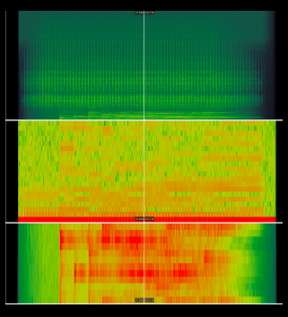 | 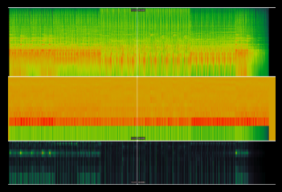 | 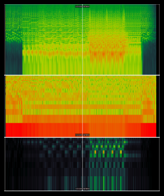 |
| Tick Down | Tough Decision | Blue Bird Lamentation -Orchestra- |
Task 2
Spectrogram Histograms
| 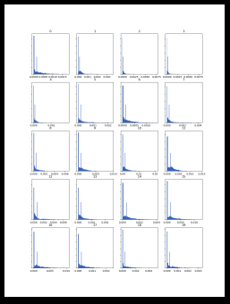 | 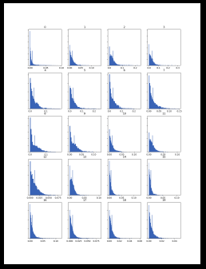 | 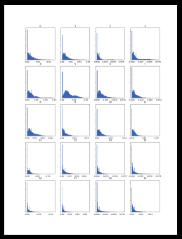 |
| Tick Down | Tough Decision | Blue Bird Lamentation -Orchestra- |
MFCC Histograms
| 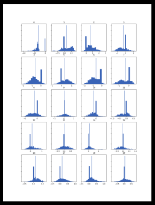 | 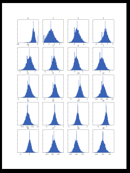 | 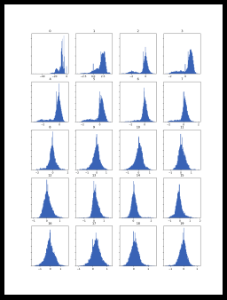 |
| Tick Down | Tough Decision | Blue Bird Lamentation -Orchestra- |
Chromagram Histograms
The process of creating these invariably invoked an error message, and the python script would only generate the first 12 of the 20 histrograms. After consulting with the course GTA, we decided to go forward with what the script generated, given it was at least giving us a valid output, even if not the whole thing. The relatively short lengths of these tracks could potentially be the culprit, with Blue Bird being the longest at only 2m45s.
| 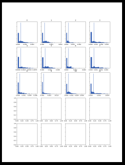 | 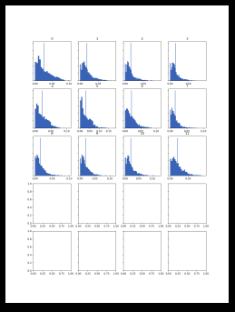 | 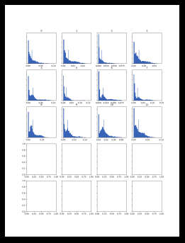 |
| Tick Down | Tough Decision | Blue Bird Lamentation -Orchestra- |
Histogram comparisons
I chose to compare my MFCC graphs, as not only does the difference in genre bear more fruitful analysis via this format.
The first track, Tick Down, has a piano that sounds similar to the one utilised occasionally throughout Blue Bird, and they are the two that sound the most similar in style. Despite this, the MFCC histograms are completely divergent, notably with regards to the range of their x-axis. The feature labelled '6' on Tick Down has merely fifteen entries on its graph, while the sixth feature on Blue Bird has far too many to count by eye. While this may not correlate directly to the acoustic and musical complexity of the songs, it is a notable difference between the three tracks.
Tough Decision is the song most incidental - the one most easily categorised as 'background music' - of the three, and it is certainly the only one designed to endlessly loop, where Tick Down and Blue Bird each have definitive beginning and end points. Therefore, it is not particularly surprising that features 5 through to 18 bear remarkable similarity, if this is indeed the section designed to loop seamlessly.